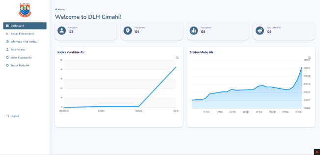

Dashboard pemantauan kualitas air
- Klien
- Dinas Lingkungan Hidup Kota Cimahi
- Jenis
- Dashboard internal

Dashboard internal untuk memantau kualitas air. Menampilkan indeks kualitas air, status mutu, dan beban pencemaran dari titik-titik pantau, lengkap dengan grafik tren harian.